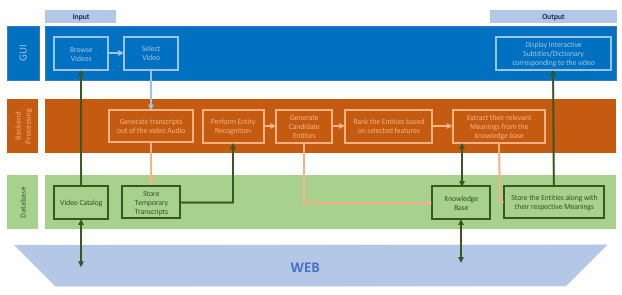

Data Mining
Entity Linking on Subtitles to enhance E-learning
Work in progress under Dr. Omair Shafiq at Carleton University
Working on using RNNs to perform Entity Linking on video subtitles so that it can be used to link to the knowledge base to provide resources for enhancing e-learning experience.

Highlights
The work done on entity linking till now has been generalised and focus more on linking the entities (mainly person, location, organisation) in a given piece of text without focusing on the general application. We want to focus on the usage of this model to improve e- learning.
Tags
Python.
Twitter Content Analysis of Various Armed Forces
Work done under Dr. Amit Awekar at IIT Guwahati
In our work, we analyze and carry out a systematic comparison of social media presence of seven major national armies including India, USA, Pakistan, Australia, Russia, France and Britain and perform in-depth analysis for their verified Twitter handles. We analyze the structure of the tweet, topics discussed by each army handles and the type of content discussed in the tweets.
Highlights
- Analyzed Max Retweet day, Content of Top Tweets, Interactive Measure, Top Hashtags and User Mentions.
- Performed Topic Modeling using Twitter-LDA models.
- Classification of tweets into 6 categories based on their content mainly Deaths, Promotions, Important Day, Humanitarian Work, Current Affairs and Miscellaneous using rule-based learning, Convolutional Neural Network, Recurrent Neural Network and Hierarchical Neural Network.
- Studied the information diffusion of these handles and also generated the time after which retweet count approaches long tail. This basically means that tweet gets a negligible number of retweets after this time and becomes irrelevant.
Tags
Python, scikit-learn, Tweepy, Numpy, Matplotlib, Pandas, NLTK, Keras, Jupyter Notebook, BeautifulSoup, Java, java-common.
Paper Under Review in European Conference on Information Retrieval 2019.